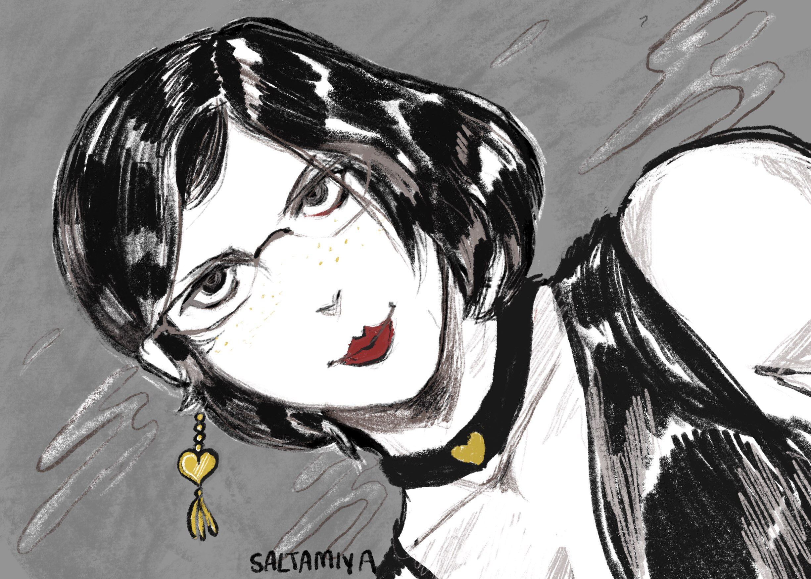
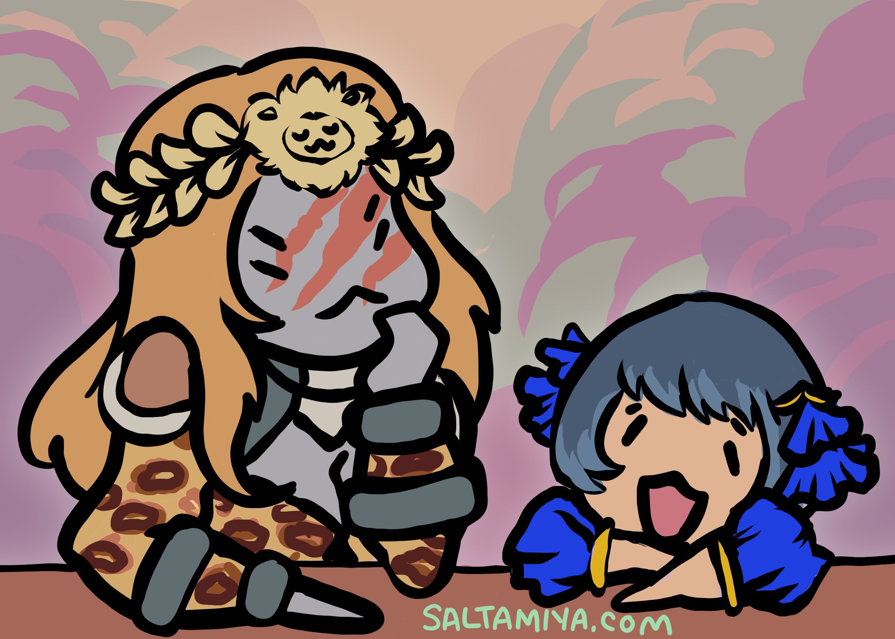
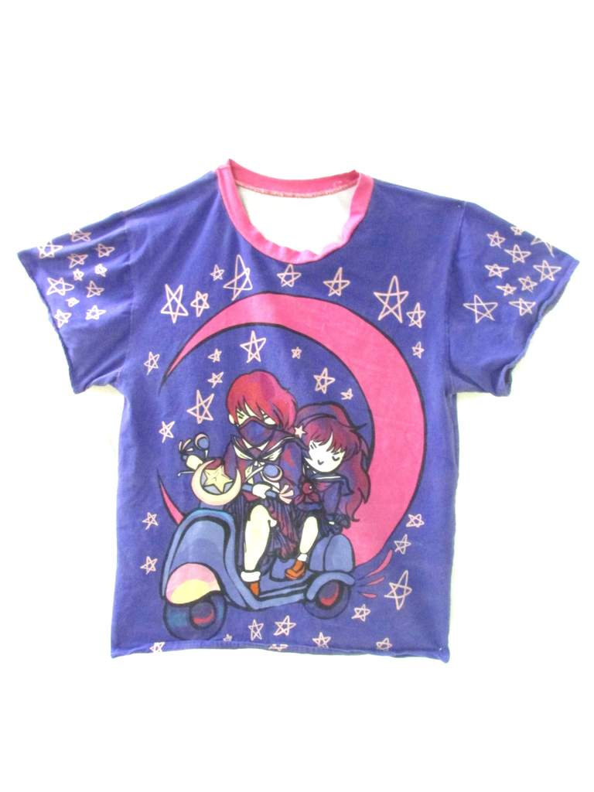
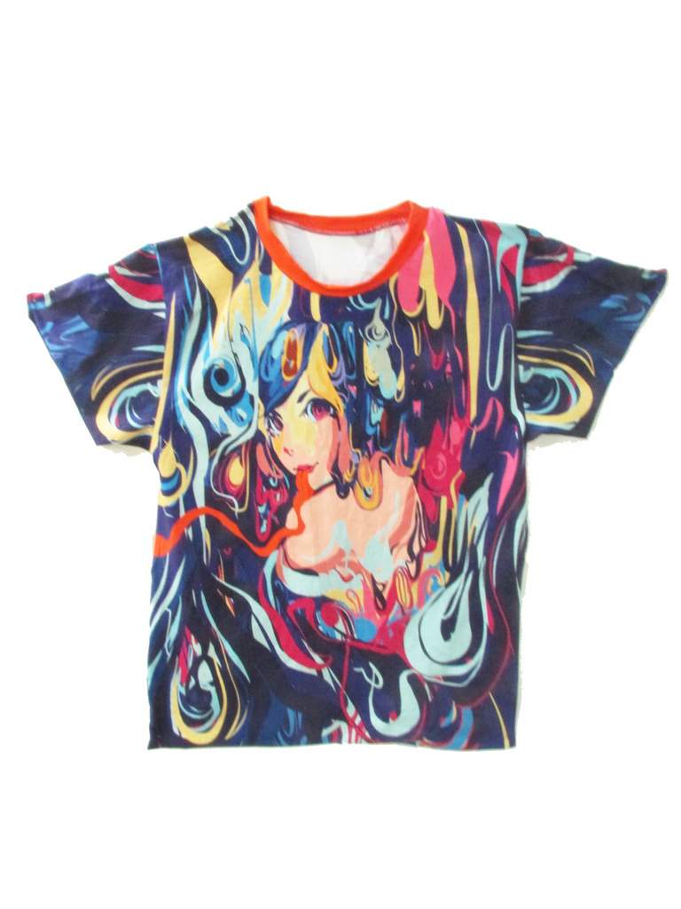
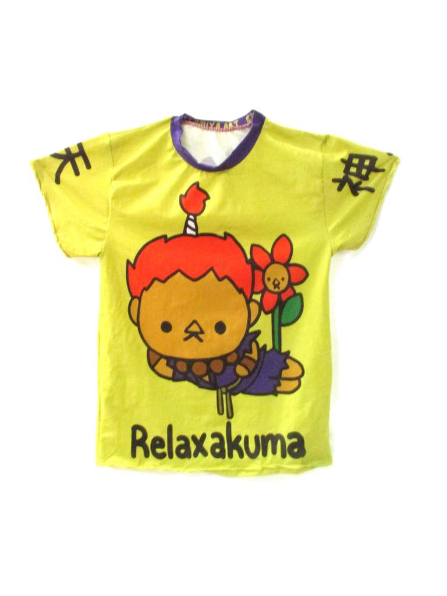
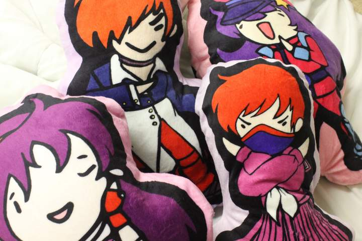
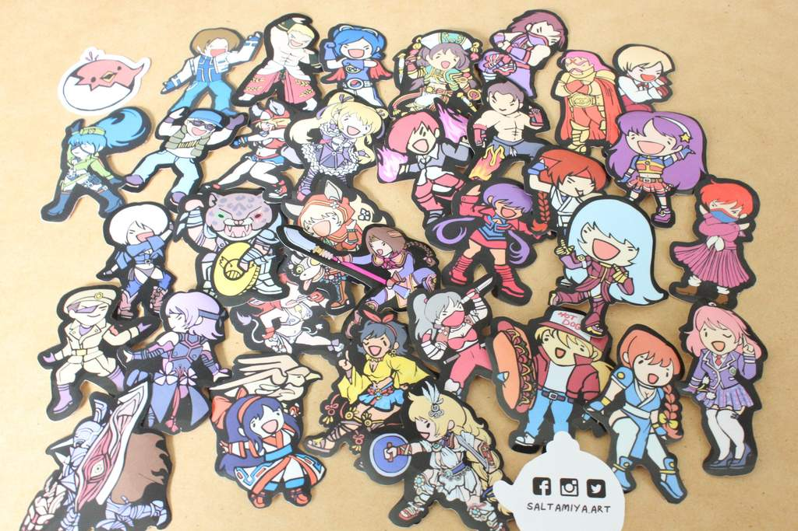

I began coding through Neopets when I was 8 years old.
There was a way to make webpages about your Neopet pet, and I would document lavish stories about my
pets through these pages.
As I got older, I realized that more than illustrating, I liked making communicative objects that
weren't limited to images.


I learned how to book-bind, I learned how to sew outfits, and I even learned how to sculpt with felt to
communicate different messages.



I made a business centered around fighting video game fan art called Saltamiya. With various skilled I
picked up from hobbies such as cosplay and website development, I made my own website and sell homemade
stickers, keychains, pillows, shirts, buttons, and prints.


Eventually, I went back to my roots of using HTML and CSS to make webpages to supplement my business of
selling my artwork and found that designing pages was something I enjoyed.
Github
LinkedIn
FreeCodeCamp
Profile
Saltamiya
Store